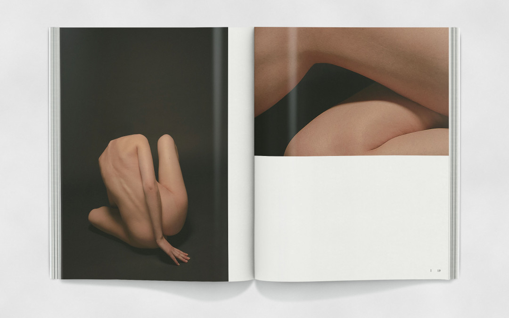
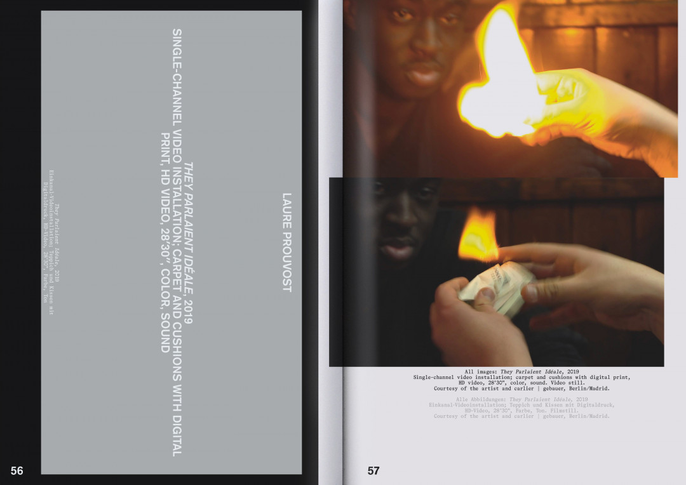

Mirko Borsche is a renowned german creative art director born in 1971, who loves to create original works within the scope of art, subculture, and design. Founder of the graphic studio Bureau Borsche located in Southern Munich, he and his team offer design and communication consultancy for clients from all fields of interest from advertising agencies, such as Springer & Jacoby to global brands like Levi’s, MTV, and Mercedes-Benz, Balenciaga, Nike, and Rimowa. For its achievements, Bureau Borsche has won numerous international awards its work has held critical acclaim in both the business and advertising sector as well as having been part of many exhibitions worldwide.
What does ignite your creative process? Tell more about the way to approach and develop your projects. There are a few essential steps in our works: the look and aesthetic have to evolve from the idea, the outcome of a project has to fit the clients need and we always try to work as close as possible with the clients. Communication is the key.
